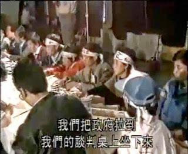
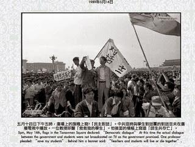
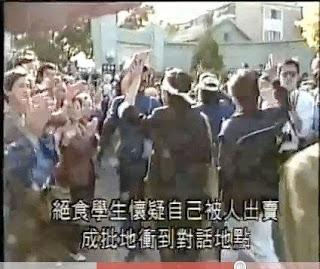

很抱歉这篇没能赶在6月4日这天发出。
今天这篇来讲一下：激进的学生发起绝食抗议之后，朝廷改革派与知识界在13、14日进行的几次斡旋。
本系列前面2篇介绍了“策划绝食的过程”以及“绝食第一天的情形”。对赵紫阳而言，5月13日开始的绝食，无疑是非常棘手的难题。从某种意义上讲：激进学生发起的绝食抗议，把老赵逼到了死角（几乎没有腾挪的余地）。
为啥这么说捏？
因为中苏双方早就谈好了戈尔巴乔夫要在【5月15日】正式访华，并举行中苏峰会。在整个80年代，1989年的这次中苏峰会的重要性仅次于1985年的美苏峰会（那次是里根与戈尔巴乔夫）。如此重要的外交盛事，朝廷上下自然极为重视。按照惯例，中方应该在天安门广场举行欢迎仪式，戈尔巴乔夫应该向人民英雄纪念碑献花。但是广场正被绝食的学生占据，再加上围观的市民，有好几万人。这种情况下，显然无法进行苏联元首的欢迎仪式。
当时的朝廷面临两种选择：
方案1——在15日之前让绝食的学生离开广场；
方案2——换一个地方（首都机场）举行戈尔巴乔夫的欢迎仪式。
第一个方案如果能搞定，当然最好，但难度很大；第二个方案难度不大，但会大大降低欢迎仪式的规格。
对赵紫阳而言，要尽力实现“方案1”，避免“方案2”。设想一下，假如选择方案2（换地方，降低欢迎规格），会让朝廷在外交上大失颜面——而邓太上皇恰恰是很要面子的人（关于这点，本系列之前有提及）。矮邓恼羞成怒之后，自然会怪罪老赵对学运的怀柔策略。再加上李鹏那帮保守派趁机发难，赵的“总书记之位”肯定保不住。列位看官不妨回想一下在那之前3年的“八六学潮”——当时的总书记胡耀邦因为对学生太温和，遭到保守派的责难，不得不黯然下台。
赵紫阳要想避免胡耀邦的覆辙，就要想办法在戈尔巴乔夫到访之前，让学生离开广场。但是留给他的时间太少了（只有不到两天）。所以俺才说，老赵被逼到死角，几乎没有腾挪的余地。
虽然被逼到死角，但老赵没有坐以待毙。他在第一时间安排统战部进行斡旋。
照理说，北京出现大规模学运，首先应该出面的是“北京市委”。但是前面几篇俺已经介绍过，北京市委的领导属于保守派阵营——北京市委书记李锡铭和市长陈希同都是李鹏那边的人。显然，赵紫阳不能指望北京市委帮忙。
除了“北京市委”，另一个跟学运“对口”的部门就是“国家教委”。但是李铁映（国家教委主任）与何东昌（国家教委副主任）也是李鹏那边的人——同样指望不上。
在这种尴尬的局面下，赵紫阳才会选择让统战部出面斡旋。毕竟统战部部长阎明复是他自己人，比较靠得住。
考虑到阎明复在本次斡旋的重要作用，简单介绍一下此人。
先来说他爹阎宝航，1937年由周恩来介绍入党（中共秘密党员），之后成为中共安插在国民党高层的资深间谍，提供过不少高价值情报。
阎明复沾了他老爹的光，18岁（1949）就入党了。文革前，阎明复长期担任中央办公厅的俄文翻译——毛腊肉与赫鲁晓夫会谈，现场翻译就是他。
文革期间，阎宝航被定性为“东北帮叛党投敌反革命集团”，惨死于诏狱（秦城监狱），连骨灰都没留下。（他为中共夺权出生入死，结果落得如此下场，是不是很讽刺？）
自己亲爹被迫害致死，阎明复当然也受了牵连（在诏狱关了7年），不过总算保住一条命。文革后，阎明复继续升官，先是“全国人大常委会副秘书长”，然后是“中共中央统战部部长”，之后又兼任“中共中央书记处书记”。在当时也算是朝中大员。
13日上午，由统战部下属的“知识分子局”出面，召集了一个诸葛亮会（所谓“诸葛亮会”，就是由与会者集思广益，出谋划策），讨论如何应对学生的绝食抗议。与会者都是在京的一些知名学者。从这个时间点可以看出，赵紫阳为首的改革派，反应还是很迅速滴。
关于阎明复在这个会上的发言，陈小雅写的《八九民运史》有如下记载：
1. 为啥閻明复不同意“把中央分成保守派和改革派”？
在官场上，有很多话是只可意会不可明说滴！当年的朝廷分为“改革派与保守派”，明眼人都知道。但是阎明复作为党内高官，在【公开场合】是不能说这种话滴，否则就会被扣上“分裂党中央”的大帽子。所以阎明复只能委婉地说：
2.
“不在第一線的同志”指的是：以邓小平为首的八元老。“有很多看法”就是说：八元老对学运迟迟无法平息，已经很不爽了。
3.
从这里就可以看出，北京市委企图采用强硬手段解决学运，这也就说明：北京市委属于保守派阵营。
4.
这句话说得很直白——如果学潮无法快速平息，改革派（包括总书记赵紫阳）都得下台。
这个诸葛亮会最后得出的结论就是：由统战部出面，邀请学生领袖对话，同时让知识界作为中间人（所谓“中间人”相当于“和事佬”）。
由于时间紧迫，这个对话安排在当日下午进行。
当天下午，被邀请到统战部的学生有：对话团的代表（项小吉 ＆ 沈彤），北高联的代表（王超华 ＆ 梁二），绝食团的代表（王丹 ＆ 柴玲）；知识界方面的几个人也都是当时的名人：北京大学的教师孙立平，北京师范大学的教师刘晓波，中国政法大学的教师陈小平，北京社会科学院的李肃 & 郑也夫，北京社会经济科学研究所的王军涛，四通公司的周舵。
（13日下午这个对话，是刘晓波在六四学运中第一次出场。由于他的重头戏在后面，俺等到后面几篇再来介绍他）
对阎明复而言，他其实【没有】拍板的权力，却又要完成说服学生的任务。所以他能做的就是：动之以情，想办法感动那几个学生领袖。
根据与会者的回忆，王军涛在会议结尾时说了一句：
从这几句点评可以看出，阎确实感动了学生和知识界的代表。但他仍然没有达到目的——没能让学生从广场撤走。为啥捏？因为双方的分歧太明显了——对学生而言，他们害怕秋后算账，官方不改变“动乱”的定性，他们不会停止抗议活动；而对改革派而言，即使是总书记赵紫阳也没有办法改变“426社论”对于“动乱”的定性（那个定性是老邓亲口说的，除非老邓改口，否则没戏）
13日下午的“三方会谈”，就这样无果而终。
顺便说一下这当中的一个小插曲
当统战部会议室还在进行三方会谈的时候，广场上的学生就开始流传一个谣言，说某些学生领袖背叛大家，暗中跟阎明复做交易。
从这事儿就可以看出：【学生之间严重缺乏互信】。出现这种情况也不奇怪——参与学运的大学生来自不同高校，即使是来自同一个学校的，平日里也不一定相互认识。互相之间不熟悉，自然也就缺乏互信。
到了次日（14日）中午，阎明复再次找到几个学生领袖（王丹、吾尔开希、王超华），4个人在统战部一间小会议室见面。
阎明复向学生领袖传达一个新的动态：官方愿意再次跟学生对话，政府方面的代表包括：阎明复本人、李铁映、罗干等官员。时间定于当日下午。
一开始，王丹和吾尔开希抱怨官方代表的级别不够高。阎明复当即反驳：
接下来就开始讨论技术细节。学生方面强调要【现场直播】。阎明复表示不可能。他的理由是：统战部里面没有直播设备，而中央电视台的转播车又都去准备采访戈尔巴乔夫了，调不出来。双方僵持了一会儿，最后达成一个折中方案——现场录像，然后政府方面把录像带送往 CCTV 并保证当晚播出。
（编程随想注：为啥学生领袖这么看重现场直播？除了想要利用央视直播来扩大学运的影响，还有一个重要原因是：怕被广场上的同学们误解为“与政府进行幕后交易的叛徒”）
到了当日下午，正式对话如期举行。应学生方面的要求，对话的会议室布置成“面对面落座”的阵势，以体现【平等对话】。政府这一边，坐在中间的是阎明复和李铁映；学生一边，坐在中间的是沈彤和项小吉。当时的照片如下，其中头缠白布的是“绝食团”成员。

对话现场，学生代表与政府代表面对面落座，以体现【平等对话】

两位学生代表的镜头，大概是王丹和程真
在这次对话过程中，阎明复与李铁映的表现截然相反，让人很明显看出来：朝廷官员明显分成两个不同的阵营（也就是俺多次提及的：改革派 VS 保守派）。关于这次对话的过程，下面引述《历史的大爆炸——六四事件全景实录》的记载（此书作者张万舒，六四时期担任新华社新闻部主任，了解很多内情）。
在对话结束前，非常无奈的阎明复说了一番话：

天安门广场上的绝食学生等待对话的实况转播

在广场上一直没等到转播的绝食学生，冲击统战部的对话现场
为啥一直没有进行转播？学生方面怀疑政府中有人搞鬼。下面是当事人沈彤的回忆（摘自《回顾与反思——六四流亡学生17人》一书）：
对话结束后，对话团团长项小吉接受外媒采访
刚才俺聊到了14日中午，阎明复向3个学生领袖（王丹、吾尔开希、王超华）通报当日下午的正式对话。王超华认为这种形式的对话【不能】解决问题。因为参与绝食的学生立场都很强硬。即使政府对话能说服与会的学生领袖，这些学生领袖到了广场上，还是无法劝说绝食者离开。王超华和王丹商量之后，觉得唯一的希望就是找那些有名望的知识分子，让他们到广场上劝说绝食的学生离开。
很凑巧的是，当日下午，在《光明日报》社有一个知识界的座谈会，是戴晴发起的。王超华知道有这么一个座谈会（王曾经在《光明日报》工作过两年，与戴相识）。所以她向阎明复提议，让知识分子出面劝说绝食学生。阎明复赞同她的提议（多一条路总归没坏处），并派了一辆车把王超华送到《光明日报》社。
在本系列前面几篇已经多次提到过戴晴。考虑到这次知识界的斡旋与她的关系很大，简单介绍一下此人。
戴晴原名傅小庆，其父傅大庆1944年死于日本宪兵队之手。之后，戴晴成为叶剑英的养女（叶与傅大庆关系密切，并且是傅的证婚人）。由于这个特殊身份，她经常能够发表一些比较大胆政治言论。
六四期间，戴晴在《光明日报》当记者。另外，文革前她曾经在总参谋部某研究所从事情报翻译工作，这个经历使得某些学生怀疑她是军方或国安的特务。
她对时局看得还是比较准的，早在“四·二七大游行”之后，她就主张学生要【见好就收】。
很讽刺的是——戴晴虽然极力想要平息学运。但六四屠城之后，保守派把持的朝廷却把戴晴定性为学运的“幕后黑手”。她被关到诏狱（秦城监狱），释放之后还继续享受“监视居住”的待遇。
5月14日这天，由戴晴出面召集了一个座谈会，与会的都是当时知识界的名人，包括如下：
严家其（中国社科院政治学研究所首任所长。六四后流亡海外）
刘再复（中国社科院文学研究所所长，《文学评论》杂志主编。六四后流亡海外）
包遵信（80年代初主编《走向未来》丛书，被誉为中国自由民主思想的启蒙。六四后被当局定性为“幕后黑手”，入狱5年）
李泽厚（80年代著名哲学家、美学家；与方励之、金观涛、温元凯并称为80年代“青年四大导师”。六四后流亡海外）
温元凯（80年代著名经济学家、化学家；与方励之、金观涛、李泽厚并称为80年代“青年四大导师”）
苏晓康（80年代著名作家，当时很火爆的电视剧《河殇》的作者。六四后，该剧被中宣部查禁）
李洪林（中宣部理论局副局长，中国历史博物馆党史研究室主任）
于浩成（80年代著名法学家，《法学杂志》主编，《法律咨询》杂志社长。六四后被开除党籍）
麦天枢（《大国崛起》的总策划和创作指导）
李陀（作家，《北京文学》副主编）
苏炜（作家，中国社科院文学研究所研究员）
座谈会开始时，《光明日报》负责人作了开场白︰
王超华很敬仰这些大牛，不敢插话。等到别人都讲完了，她才开始发言。下面是她本人的回忆（摘自《我与十二学者上广场》）：
在出发去广场之前，学者们起草了一份《我们对今天局势的紧急呼吁》（以下简称《呼吁书》）。为了起草这份《呼吁书》，这些知识界的大牛出现很多分歧，以下《八九民运史》的记载：
下面是这份《呼吁书》的全文：
搞定了《呼吁书》之后，已经是傍晚。阎明复派车把12名学者接到统战部，与在那儿的学生代表会合，然后从六部口一起走到广场（路上人太多，只能靠步行）。到广场已经是晚上21点。这时候的广场人山人海（除了学生，还有很多围观的市民），一行人费了很大劲才挤到广场中央，搞得每个学者都气喘吁吁。李泽厚因为有心脏病，实在受不了，先行离开。
然后就是几个学者轮流发表演讲。其中的温元凯、包遵信、苏晓康几人，在座谈会的时候都主张要劝学生撤离，但到了现场演讲，这几位学者对“撤离广场”一事竟然只字未提，只是一个劲儿地表示对绝食学生的支持和声援。
为啥会这样捏？这实际上是一个心理学现象。当时的场面很悲壮也很煽情，个人很容易被集体裹挟。这几个学者虽然在学术方面很有造诣，但是在心理素质方面，（和常人相比）未必能强多少，所以才会出现这种反差。关于这个话题，俺的网盘上分享过两本书（如下）。感兴趣的同学不妨看一看。
古斯塔夫·勒庞（Gustave Le Bon）的代表作《乌合之众——大众心理研究》
埃里克·霍弗（Eric Hoffer）的代表作《狂热分子——群众运动圣经》
那天晚上的学者演讲，最后一个好像是戴晴。以下是王超华的回忆，摘自她所写的《我与十二学者上广场》。
这几次斡旋失败之后，以赵紫阳为首的改革派，可以说是败局已定。但广场上的学生对此并不知情。
回到本系列的目录
今天这篇来讲一下：激进的学生发起绝食抗议之后，朝廷改革派与知识界在13、14日进行的几次斡旋。
★赵紫阳的困境
本系列前面2篇介绍了“策划绝食的过程”以及“绝食第一天的情形”。对赵紫阳而言，5月13日开始的绝食，无疑是非常棘手的难题。从某种意义上讲：激进学生发起的绝食抗议，把老赵逼到了死角（几乎没有腾挪的余地）。
为啥这么说捏？
因为中苏双方早就谈好了戈尔巴乔夫要在【5月15日】正式访华，并举行中苏峰会。在整个80年代，1989年的这次中苏峰会的重要性仅次于1985年的美苏峰会（那次是里根与戈尔巴乔夫）。如此重要的外交盛事，朝廷上下自然极为重视。按照惯例，中方应该在天安门广场举行欢迎仪式，戈尔巴乔夫应该向人民英雄纪念碑献花。但是广场正被绝食的学生占据，再加上围观的市民，有好几万人。这种情况下，显然无法进行苏联元首的欢迎仪式。
当时的朝廷面临两种选择：
方案1——在15日之前让绝食的学生离开广场；
方案2——换一个地方（首都机场）举行戈尔巴乔夫的欢迎仪式。
第一个方案如果能搞定，当然最好，但难度很大；第二个方案难度不大，但会大大降低欢迎仪式的规格。
对赵紫阳而言，要尽力实现“方案1”，避免“方案2”。设想一下，假如选择方案2（换地方，降低欢迎规格），会让朝廷在外交上大失颜面——而邓太上皇恰恰是很要面子的人（关于这点，本系列之前有提及）。矮邓恼羞成怒之后，自然会怪罪老赵对学运的怀柔策略。再加上李鹏那帮保守派趁机发难，赵的“总书记之位”肯定保不住。列位看官不妨回想一下在那之前3年的“八六学潮”——当时的总书记胡耀邦因为对学生太温和，遭到保守派的责难，不得不黯然下台。
赵紫阳要想避免胡耀邦的覆辙，就要想办法在戈尔巴乔夫到访之前，让学生离开广场。但是留给他的时间太少了（只有不到两天）。所以俺才说，老赵被逼到死角，几乎没有腾挪的余地。
★赵紫阳的对策
虽然被逼到死角，但老赵没有坐以待毙。他在第一时间安排统战部进行斡旋。
◇为啥选择【统战部】出面？
照理说，北京出现大规模学运，首先应该出面的是“北京市委”。但是前面几篇俺已经介绍过，北京市委的领导属于保守派阵营——北京市委书记李锡铭和市长陈希同都是李鹏那边的人。显然，赵紫阳不能指望北京市委帮忙。
除了“北京市委”，另一个跟学运“对口”的部门就是“国家教委”。但是李铁映（国家教委主任）与何东昌（国家教委副主任）也是李鹏那边的人——同样指望不上。
在这种尴尬的局面下，赵紫阳才会选择让统战部出面斡旋。毕竟统战部部长阎明复是他自己人，比较靠得住。
◇阎明复其人
考虑到阎明复在本次斡旋的重要作用，简单介绍一下此人。
先来说他爹阎宝航，1937年由周恩来介绍入党（中共秘密党员），之后成为中共安插在国民党高层的资深间谍，提供过不少高价值情报。
阎明复沾了他老爹的光，18岁（1949）就入党了。文革前，阎明复长期担任中央办公厅的俄文翻译——毛腊肉与赫鲁晓夫会谈，现场翻译就是他。
文革期间，阎宝航被定性为“东北帮叛党投敌反革命集团”，惨死于诏狱（秦城监狱），连骨灰都没留下。（他为中共夺权出生入死，结果落得如此下场，是不是很讽刺？）
自己亲爹被迫害致死，阎明复当然也受了牵连（在诏狱关了7年），不过总算保住一条命。文革后，阎明复继续升官，先是“全国人大常委会副秘书长”，然后是“中共中央统战部部长”，之后又兼任“中共中央书记处书记”。在当时也算是朝中大员。
★统战部的斡旋，无果而终
◇13日上午的“诸葛亮会”
13日上午，由统战部下属的“知识分子局”出面，召集了一个诸葛亮会（所谓“诸葛亮会”，就是由与会者集思广益，出谋划策），讨论如何应对学生的绝食抗议。与会者都是在京的一些知名学者。从这个时间点可以看出，赵紫阳为首的改革派，反应还是很迅速滴。
关于阎明复在这个会上的发言，陈小雅写的《八九民运史》有如下记载：
閻明复一方面不同意“把中央分成保守派和改革派”，說在支持改革上，中央領導的意見是一致的。但是又透露，對于許多具体問題有分歧。他特別指出，主要是"不在第一線的同志有很多看法"。而且，時至今日，北京市仍然堅持原來的態度。他警告說︰“學生們鬧下去，可能引起北京市動手。”他要大家給那些他們認為是改革的人以喘息的時机，“否則我們都完蛋，都下台。”从阎明复的这些话，可以获得很多信息量，俺来解读一下。
他請到會者做做工作，勸學生識大体，顧大局，先撤出廣場，有什么要求以后都好商量，通過協商和對話來解決。
1. 为啥閻明复不同意“把中央分成保守派和改革派”？
在官场上，有很多话是只可意会不可明说滴！当年的朝廷分为“改革派与保守派”，明眼人都知道。但是阎明复作为党内高官，在【公开场合】是不能说这种话滴，否则就会被扣上“分裂党中央”的大帽子。所以阎明复只能委婉地说：
對于許多具体問題有分歧。
2.
不在第一線的同志有很多看法是啥意思？
“不在第一線的同志”指的是：以邓小平为首的八元老。“有很多看法”就是说：八元老对学运迟迟无法平息，已经很不爽了。
3.
學生們鬧下去，可能引起北京市動手。是啥意思？
从这里就可以看出，北京市委企图采用强硬手段解决学运，这也就说明：北京市委属于保守派阵营。
4.
否則我們都完蛋，都下台。是啥意思？
这句话说得很直白——如果学潮无法快速平息，改革派（包括总书记赵紫阳）都得下台。
这个诸葛亮会最后得出的结论就是：由统战部出面，邀请学生领袖对话，同时让知识界作为中间人（所谓“中间人”相当于“和事佬”）。
由于时间紧迫，这个对话安排在当日下午进行。
◇13日下午【非正式】的“三方会谈”
当天下午，被邀请到统战部的学生有：对话团的代表（项小吉 ＆ 沈彤），北高联的代表（王超华 ＆ 梁二），绝食团的代表（王丹 ＆ 柴玲）；知识界方面的几个人也都是当时的名人：北京大学的教师孙立平，北京师范大学的教师刘晓波，中国政法大学的教师陈小平，北京社会科学院的李肃 & 郑也夫，北京社会经济科学研究所的王军涛，四通公司的周舵。
（13日下午这个对话，是刘晓波在六四学运中第一次出场。由于他的重头戏在后面，俺等到后面几篇再来介绍他）
对阎明复而言，他其实【没有】拍板的权力，却又要完成说服学生的任务。所以他能做的就是：动之以情，想办法感动那几个学生领袖。
根据与会者的回忆，王军涛在会议结尾时说了一句：
阎部长，坦率地说，你感动了上帝。几位老师也被你感动了。参与的学生领袖之一王丹在事后也说了一句：
想不到共产党的高官中，还有这样的好人。
从这几句点评可以看出，阎确实感动了学生和知识界的代表。但他仍然没有达到目的——没能让学生从广场撤走。为啥捏？因为双方的分歧太明显了——对学生而言，他们害怕秋后算账，官方不改变“动乱”的定性，他们不会停止抗议活动；而对改革派而言，即使是总书记赵紫阳也没有办法改变“426社论”对于“动乱”的定性（那个定性是老邓亲口说的，除非老邓改口，否则没戏）
13日下午的“三方会谈”，就这样无果而终。
顺便说一下这当中的一个小插曲
当统战部会议室还在进行三方会谈的时候，广场上的学生就开始流传一个谣言，说某些学生领袖背叛大家，暗中跟阎明复做交易。
从这事儿就可以看出：【学生之间严重缺乏互信】。出现这种情况也不奇怪——参与学运的大学生来自不同高校，即使是来自同一个学校的，平日里也不一定相互认识。互相之间不熟悉，自然也就缺乏互信。
◇14日下午的【正式】对话
到了次日（14日）中午，阎明复再次找到几个学生领袖（王丹、吾尔开希、王超华），4个人在统战部一间小会议室见面。
阎明复向学生领袖传达一个新的动态：官方愿意再次跟学生对话，政府方面的代表包括：阎明复本人、李铁映、罗干等官员。时间定于当日下午。
一开始，王丹和吾尔开希抱怨官方代表的级别不够高。阎明复当即反驳：
李铁映是国务院副总理，政治局委员，我本人是中央书记处书记。你们觉得哪个级别还不够？3个学生领袖也就不好再说啥。
接下来就开始讨论技术细节。学生方面强调要【现场直播】。阎明复表示不可能。他的理由是：统战部里面没有直播设备，而中央电视台的转播车又都去准备采访戈尔巴乔夫了，调不出来。双方僵持了一会儿，最后达成一个折中方案——现场录像，然后政府方面把录像带送往 CCTV 并保证当晚播出。
（编程随想注：为啥学生领袖这么看重现场直播？除了想要利用央视直播来扩大学运的影响，还有一个重要原因是：怕被广场上的同学们误解为“与政府进行幕后交易的叛徒”）
到了当日下午，正式对话如期举行。应学生方面的要求，对话的会议室布置成“面对面落座”的阵势，以体现【平等对话】。政府这一边，坐在中间的是阎明复和李铁映；学生一边，坐在中间的是沈彤和项小吉。当时的照片如下，其中头缠白布的是“绝食团”成员。
对话现场，学生代表与政府代表面对面落座，以体现【平等对话】
两位学生代表的镜头，大概是王丹和程真
在这次对话过程中，阎明复与李铁映的表现截然相反，让人很明显看出来：朝廷官员明显分成两个不同的阵营（也就是俺多次提及的：改革派 VS 保守派）。关于这次对话的过程，下面引述《历史的大爆炸——六四事件全景实录》的记载（此书作者张万舒，六四时期担任新华社新闻部主任，了解很多内情）。
晚上8時半，到統戰部禮堂採訪對話的記者回來說，閻明復主持對話會，他一開始就說，今天的講話應該坦誠地進行，希望這是個良好的開端。學生對話代表也說，爭取到這次對話很不容易。他們提出希望在三個方面對話，一是學運的性質問題；二是怎樣保證憲法規定的民主權利；三是如何推進中國的改革。實際上主要圍繞第一個問題展開對話。关于这次对话，还有一个蹊跷之处：本来说好的“录像转播”并没有落实（录像带送出去了，但并未在央视播出）。当时广场上的学生事先听说会有电视转播，大家都翘首以盼（注：广场的高音喇叭实时播放央视一套的声音）。结果等到19点半，新闻联播都结束了，也没有听到关于对话的报道。所以广场上的学生很愤怒，一些学生前往统战部并包围了对话的办公楼。他们高喊“停止对话，立即现场直播”。导致对话无法进行下去。
無論學生代表怎麼說，主講人李鐵映總是反反覆覆只用「讓實踐來檢驗」這句話來兜圈子，不僅兜得毫無誠意，而且兜得大家疲倦厭煩，直到無法進行下去。閻明復只好出來救場，他說︰「4﹒26社論」是根據4月26日以前的情況寫的，那時有西安、長沙的打砸搶。4月26日以後的情況不同，沒有西安，長沙那種情況。因此中央對學潮的態度是明確的，紫陽同志「五四」講話就表明了。現在最緊迫的問題是解決廣場上的絶食問題。他的講話給人以耳目一新之感，全場起死回生般活躍起來。
就在這時，閻明復卻起身去洗手間，李鐵映立即聲明說：閻的發這不代表中央，只有鄧小平講話和「4﹒26社論」代表中央的立場。一下又把會場打悶了。這時已到晚7時，廣場上絶食的學生代表又來要求現場直播對話，閻明復回來說技術設備條件無法解決，只好宣佈休會。
在对话结束前，非常无奈的阎明复说了一番话：
我个人理解学运的原因，我知道你们的行动是学生的真正呼声。但是，“四·二六社论”是政治局会议的精神。我有我个人的看法，但我实在不能在这样的场合说出来。我希望用你们自己的行动来证明你们自己的判断。
党是人民的政党，不可能用武力来对待学生。你们不撤也没关系，戈尔巴乔夫明天来访，就让我们丢丑吧。在外国，接见国家元首还有人扔臭鸡蛋呢！我们的政府也应该适应特殊情况。但是，我也只能为你们说这一句话；而你们，也在人民面前丢了一张牌。
天安门广场上的绝食学生等待对话的实况转播
在广场上一直没等到转播的绝食学生，冲击统战部的对话现场
为啥一直没有进行转播？学生方面怀疑政府中有人搞鬼。下面是当事人沈彤的回忆（摘自《回顾与反思——六四流亡学生17人》一书）：
廣場的學生和很多聲援的學生包圍了統戰部，準備衝進去，這是使對話不可能進行的一個背景。之後，王超華進來大鬧會場。項小吉當時在外面調解，我當時拍著桌子站起來，指著閻明復說，“為什么答應了直播不直播？”閻明復，李鐵映、當時的其他十二個部的副部長和鄭友梅是政府方面的對話代表，他們都覺得應該是在直播的。所以，實際上說明政府內部有人在阻止直播。後來超華進來之後，就使得對話代表不得不跟閻明復針鋒相對地說：“你為什么不直播？”從我們當時看到的，閻明復自己并不知道這些內情。所以對話就中斷了。
对话结束后，对话团团长项小吉接受外媒采访
★知识界的斡旋，同样无果而终
◇王超华的主意
刚才俺聊到了14日中午，阎明复向3个学生领袖（王丹、吾尔开希、王超华）通报当日下午的正式对话。王超华认为这种形式的对话【不能】解决问题。因为参与绝食的学生立场都很强硬。即使政府对话能说服与会的学生领袖，这些学生领袖到了广场上，还是无法劝说绝食者离开。王超华和王丹商量之后，觉得唯一的希望就是找那些有名望的知识分子，让他们到广场上劝说绝食的学生离开。
很凑巧的是，当日下午，在《光明日报》社有一个知识界的座谈会，是戴晴发起的。王超华知道有这么一个座谈会（王曾经在《光明日报》工作过两年，与戴相识）。所以她向阎明复提议，让知识分子出面劝说绝食学生。阎明复赞同她的提议（多一条路总归没坏处），并派了一辆车把王超华送到《光明日报》社。
◇戴晴其人
在本系列前面几篇已经多次提到过戴晴。考虑到这次知识界的斡旋与她的关系很大，简单介绍一下此人。
戴晴原名傅小庆，其父傅大庆1944年死于日本宪兵队之手。之后，戴晴成为叶剑英的养女（叶与傅大庆关系密切，并且是傅的证婚人）。由于这个特殊身份，她经常能够发表一些比较大胆政治言论。
六四期间，戴晴在《光明日报》当记者。另外，文革前她曾经在总参谋部某研究所从事情报翻译工作，这个经历使得某些学生怀疑她是军方或国安的特务。
她对时局看得还是比较准的，早在“四·二七大游行”之后，她就主张学生要【见好就收】。
很讽刺的是——戴晴虽然极力想要平息学运。但六四屠城之后，保守派把持的朝廷却把戴晴定性为学运的“幕后黑手”。她被关到诏狱（秦城监狱），释放之后还继续享受“监视居住”的待遇。
◇光明日报社的座谈会
5月14日这天，由戴晴出面召集了一个座谈会，与会的都是当时知识界的名人，包括如下：
严家其（中国社科院政治学研究所首任所长。六四后流亡海外）
刘再复（中国社科院文学研究所所长，《文学评论》杂志主编。六四后流亡海外）
包遵信（80年代初主编《走向未来》丛书，被誉为中国自由民主思想的启蒙。六四后被当局定性为“幕后黑手”，入狱5年）
李泽厚（80年代著名哲学家、美学家；与方励之、金观涛、温元凯并称为80年代“青年四大导师”。六四后流亡海外）
温元凯（80年代著名经济学家、化学家；与方励之、金观涛、李泽厚并称为80年代“青年四大导师”）
苏晓康（80年代著名作家，当时很火爆的电视剧《河殇》的作者。六四后，该剧被中宣部查禁）
李洪林（中宣部理论局副局长，中国历史博物馆党史研究室主任）
于浩成（80年代著名法学家，《法学杂志》主编，《法律咨询》杂志社长。六四后被开除党籍）
麦天枢（《大国崛起》的总策划和创作指导）
李陀（作家，《北京文学》副主编）
苏炜（作家，中国社科院文学研究所研究员）
座谈会开始时，《光明日报》负责人作了开场白︰
赵紫阳的"五四"讲话提出用冷静、克制的方法处理游行请愿的问题，我个人还是比较满意的。但这是两方面都应该努力的目标。这次学生的罢课/游行，对政治体制改革和法制建设都会有好处。但如果处理不好，矛盾激化，后果不堪设想。我们可以用我们的舆论，我们的态度来影响事物的进程。请大家谈谈自己的看法。然后这些知识界的大牛就开始畅所欲言。陈小雅的《八九民运史》比较详细地记录了这些学者的发言。考虑到篇幅很长，俺就不引用了。
王超华很敬仰这些大牛，不敢插话。等到别人都讲完了，她才开始发言。下面是她本人的回忆（摘自《我与十二学者上广场》）：
我自己知道，从我奔这个会来的时候，我就是打着主意要把名人们拉到广场上去的。不过，我确实不善辞令，当时说得也是颠三倒四。除了企图说明激进学生的绝望情绪以外，记得我还试图强调学生随时会受到镇压，而这是非常危险的。确如戴晴所言，我从发言一开始就不停地掉眼泪，说到一半时，已有至少一半学者作家们在抽泣了。记不清是不是戴晴了，有人问我，你觉得我们能做些什么？你希望我们做些什么？我直截了当地说，你们应当到广场去劝学生撤离，现在只有你们能说服学生。我那么急于将他们推出去，简直就没有余力象戴晴那样去注意这些人之间的异同。记得我身旁的李洪林一边擦着眼泪一边说，我们应当去，我们不能看着学生们被镇压…… 其他人也情绪激动地说着类似的话。
◇《紧急呼吁书》的出台
在出发去广场之前，学者们起草了一份《我们对今天局势的紧急呼吁》（以下简称《呼吁书》）。为了起草这份《呼吁书》，这些知识界的大牛出现很多分歧，以下《八九民运史》的记载：
李澤厚的最后發言認為，要政府出來就一些問題作符合大家要求的表態是一件不可能的事情，因此，他們唯一能做的一件事，就是勸學生暫時撤离廣場。于是，人們轉而開始議論呼吁書的內容。在七觜八舌之中，人們的意見大体可以分為三派︰经过几个小时的努力，终于拿出一份令在场各位都可以接受的《呼吁书》。本来严家其是拒绝签名的，其他人又在《呼吁书》末尾补充了一段“郑重重申”，严才同意签上自己的名字。光一个《呼吁书》就有这么多分歧，这也反应出：当时中国知识界对学运的态度存在很多不同的观点和立场。
其一，以溫元凱為代表，道義上的學運派，立場上的政府〔改革〕派。在同情學運的前提下，希望顧全大局，給政府臉面。戴晴、李澤厚也是這种意見比較堅定的持有者，是為一种“現實政治”的態度；
其二，以嚴家其為代表，道義与立場上均為學運派。堅持政府不滿足學生提出的條件則無由勸學生撤退。是為“理想政治”与“原則政治”的方式。
其余的人則在溫、嚴兩种意見之中來回搖擺，實質上是在原則政治与現實政治之間找不到落腳點。
比較獨立的第三种意見由蘇煒個人持有——民主社會的特征應該是依法行事，合理的社會結构應是知識界獨立于政府与學生之外，充當社會的緩沖机制。他警告人們“兩极社會”是一种很危險的社會。他同意到廣場上去勸說，但聲明不是為了誰。他們的行為不應對誰上台，誰下台負責任。因為，誰是改革派？說不清楚。
下面是这份《呼吁书》的全文：
我们对今天局势的紧急呼吁
1989年5月14日
鉴于天安门广场目前形势，我们十二位学者、作家本着良知和责任心，发出以下紧急呼吁：
一，要求中央负责人发表公开讲话，宣布这次学潮是爱国民主运动，反对以任何形式对参加运动的学生秋后算账。
二，我们认为，由大多数学生经过民主程序选举产生的学生组织是合法组织，政府应当承认。
三，反对以任何藉口、任何形式、任何方法对静坐绝食的学生采取暴力，谁这样做，谁将成为历史的罪人。
亲爱的广大同学们，自昨晚得知大家来天安门广场静坐绝食的消息，我们都非常难过，非常担忧。从四月中旬以来，你们为推进中国民主、中国改革的进程，一次次走上街头，以令人羡佩的无私精神和大无畏的气概，开创中国历史的新纪元。人民会永远记住你们在一九八九年的今天做出的历史功绩。但是，民主是逐步成长的，不能期望它在一天实现，我们要彻底清醒，有人要极力挑起事端，激化矛盾，促使事态恶化，以便破坏改革和民主化的事业。为了中国改革的长远利益，为了避免发生亲者痛仇者快的事情，为了中苏最高级会晤能够顺利进行，我们恳请同学们发扬这次学潮中最可贵的精神，暂时撤离天安门广场。
我们相信同学们是能够做出明智的判断的。
但我们郑重重申：如果政府不能做到以上三点，我们将和同学们一道为实现上述三点坚定不移地奋斗下去。
戴晴 于浩成 李洪林 严家其
苏晓康 包遵信 温元凯 刘再复
苏玮 李泽厚 麦天枢 李陀
◇12学者上广场
搞定了《呼吁书》之后，已经是傍晚。阎明复派车把12名学者接到统战部，与在那儿的学生代表会合，然后从六部口一起走到广场（路上人太多，只能靠步行）。到广场已经是晚上21点。这时候的广场人山人海（除了学生，还有很多围观的市民），一行人费了很大劲才挤到广场中央，搞得每个学者都气喘吁吁。李泽厚因为有心脏病，实在受不了，先行离开。
然后就是几个学者轮流发表演讲。其中的温元凯、包遵信、苏晓康几人，在座谈会的时候都主张要劝学生撤离，但到了现场演讲，这几位学者对“撤离广场”一事竟然只字未提，只是一个劲儿地表示对绝食学生的支持和声援。
为啥会这样捏？这实际上是一个心理学现象。当时的场面很悲壮也很煽情，个人很容易被集体裹挟。这几个学者虽然在学术方面很有造诣，但是在心理素质方面，（和常人相比）未必能强多少，所以才会出现这种反差。关于这个话题，俺的网盘上分享过两本书（如下）。感兴趣的同学不妨看一看。
古斯塔夫·勒庞（Gustave Le Bon）的代表作《乌合之众——大众心理研究》
埃里克·霍弗（Eric Hoffer）的代表作《狂热分子——群众运动圣经》
那天晚上的学者演讲，最后一个好像是戴晴。以下是王超华的回忆，摘自她所写的《我与十二学者上广场》。
戴晴开始讲解学者作家们希望学生们做什么。她讲的时候，广场相当安静。她提到下午的座谈会和第二天的一个版面，但是很显然，在那种气氛中没有学生能理解这个版面的意义（编程随想注：官方同意《光明日报》拿出一个版面报道学运）。她还试着再次肯定学运的成绩，但语气并不激昂，人群也就保持着安静等她往下说。我当时真的觉得这种无法预料的成千上万人的暂时安静很可怕。终于，她开始说到让赵紫阳或李鹏出来见见大家，大家就撤回学校去。人群中有些骚动，但基本上还是安静的，有人大声问：他们出来说什么？戴晴似乎对这样的问题也没有准备，略停了停才说：让他们对大家说，同学们好！大家辛苦了！（她把声调提高）我们就回去，好不好？听得出来，她在极力设法让人们接受她的方案，这个“好不好”喊得甚至带有煽动性口吻。这回人群真的开始骚动了。我记得，或者是，我当时觉得，人们像欢呼一样高喊着回答她：“不——好——！”到这里可以看出，知名学者的斡旋，基本上算失败了。在学者们离开之后，在广场上的各个高校代表进行了一次投票，表决是否要撤离。总共64个代表，40多票反对撤离，另有几票弃权。赞同撤离的比例很低。
★结尾
这几次斡旋失败之后，以赵紫阳为首的改革派，可以说是败局已定。但广场上的学生对此并不知情。
回到本系列的目录
版权声明
本博客所有的原创文章，作者皆保留版权。转载必须包含本声明，保持本文完整，并以超链接形式注明作者编程随想和本文原始地址：
https://program-think.blogspot.com/2018/06/june-fourth-incident-32.html
本博客所有的原创文章，作者皆保留版权。转载必须包含本声明，保持本文完整，并以超链接形式注明作者编程随想和本文原始地址：
https://program-think.blogspot.com/2018/06/june-fourth-incident-32.html